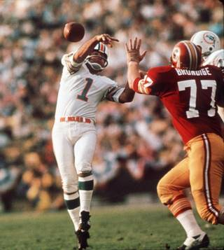

‘No Indication of Elevated Suicide Risk’ in NFL Retirees; So Does Football Not Cause Suicides?
A recent study in the American Journal of Sports Medicine (AJSM) caught my eye last week. The study, from three researchers with the federal National Institute of Occupational Safety and Health (NIOSH), part of the CDC, found that retired NFL players had a 53% lower rate of suicide (95% confidence interval 18%-76%) versus a comparison group.
It’s an intriguing finding, but unfortunately the conclusions we can draw from it are limited. Specifically, the study cannot tell us whether professional football raises or lowers suicide rates. There are several reasons for this, but we’ll focus on a couple of the bigger ones below.
The Study
It’s always good to start analyzing a study1 by figuring out just what question the researchers were trying to answer. In their own words, the study’s purpose was “To compare the suicide mortality of a cohort of NFL players to what would be expected in the general population of the United States.” Notice their stated purpose was NOT to determine whether playing in the NFL causes or prevents suicides. This is a responsible omission because their study can’t answer that question.
They took a cohort of 3,439 retired NFL players who played 5 or more seasons from 1959-1988 using an NFL pension fund database. They watched these players through 2013 and counted 12 suicides.
They then asked how many suicides would we have expected among a sample of 3,439 people chosen from among all U.S. adult males, followed over the same time period, and having similar ages and races as these NFL retirees. Using national mortality rates and cause-of-death data2, the researchers estimated they would have seen 25.3 suicides in this group.
12/25.3 = 0.47, the standardized mortality ratio (SMR) reported in the study. This corresponds to a 53% lower suicide rate in the NFL players versus all U.S. men of similar ages and races. In epidemiology we refer to this whole process as indirect standardization.3 Got it? Cool.
Now, it’s really important to understand what this SMR means and, even more importantly, what it DOESN’T mean. Specifically, in the context of this study this is NOT strong evidence for football preventing suicides. (To their great credit the authors do not overstate their conclusions in their paper. To my great surprise, neither did the majority of media outlets reporting on the study.) To understand why the study doesn’t allow us to draw this conclusion, let’s appeal to the great scientist Keanu Reeves.
{kind=link}
Bill and Ted’s Ideal Scientific Study
I’m going to subject you all to a version of an exercise I love to run my students through.4 Say you wanted to know whether playing NFL football for 5+ years (versus no NFL football) caused or prevented suicides. In this study our “outcome” is suicide rate and “playing NFL football for 5+ years”5 is our “exposure” of interest (the thing whose effect on suicides we want to measure).
OK, so also say you had no financial, time, or even reality-based limitations on what you could do. How would you study this question? Go ahead, take a minute. I’ll wait.
…
…
…
…
…
…
OK, want my answer? Well you’re getting it anyway. I’d take the 3,439 retired NFL players from the pension database, watch them for suicides through 2013, then…
…hop in a time machine, go back to when each of them was born, and not change anything except to stop them from playing in the NFL. This would then become our unexposed group. I would then travel back to 2013 and check to see how many of them committed suicide under these new, no-NFL conditions.

This whole time-traveling scenario is something epidemiologists call a counterfactual. This is simply a scenario we might have liked to observe but didn’t. Here, I’ll let The Big Bang Theory explain. It’s useful when we’re thinking about how to measure the causal effect of an exposure, such as whether playing in the NFL raises or lowers suicide rates.
This study, setting aside all concerns about feasibility, would let us isolate the effect of “playing NFL football for 5+ years” (versus not playing in the NFL) on suicide rates. If we see more than 12 suicides in the unexposed group that was stopped from playing in the NFL, then playing NFL football for 5+ years prevents suicides; fewer than 12 suicides would suggest the opposite.
Why is this the Ideal Study?

The simple answer is something epidemiologists call exchangeability. In layman’s terms, it means our unexposed group that was manipulated to not play in the NFL otherwise stands in perfectly for – “is exchangeable with” – our exposed group with respect to suicide rates. Surely the exact same men who were only stopped from playing in the NFL stand in well for the actual players from the pension database in every way except playing in the NFL for 5+ years, right? If this is the case, then we can be certain that any differences in suicides we observe were because of playing in the NFL for 5+ years!
Confounding in the NIOSH Study
If your exposed and unexposed groups are not exchangeable, however, you have what scientists call confounding. Simply put, this means the effect of one thing is mixed up with the effect of another thing(s).
NFL players are vastly different from the general U.S. male population in any number of ways. Although the NIOSH study made sure these general males were the same ages and races as the NFL players, the general males may be, for example, less wealthy on average. They’re certainly in much worse shape than these elite athletes (well, besides the arthritis and chronic pain in NFL retirees, maybe). They probably smoke more and have very different health habits and behavioral patterns than NFL players. For clear evidence of this, look no further than Table 1 in the paper: while suicide rates were 53% lower, overall death rates were also 40% lower in NFL retirees than would have been expected in the general population. Cancer deaths were 41% lower and cardiovascular deaths 25% lower; these all suggest better baseline health for the elite athletes. Assaults and homicides were a whopping 83% lower than expected, suggesting possible differences in socioeconomic status. Other data from this same cohort, interestingly, do show much higher death rates for neurodegenerative diseases, such as Alzheimer’s, among NFL retirees.
The point is any of these could be associated both with playing in the NFL and suicide. If these variables are also not the result of playing NFL football (perhaps income is, but lifelong healthy habits may not be), they aren’t something whose effects we want to measure. In the NIOSH study, the effects of these “extraneous” variables cannot be teased out from those of actually playing on a professional football team, severely limiting our ability to draw conclusions about professional football’s effects on suicide rates.6
Yeah but, Like, What is “Playing in the NFL” Anyway, Man?

But it’s not as simple as all that. One important thing we waved our hands at above is the exact definition of our exposure (the thing whose effect on suicide rates we want to estimate). We can say it’s “playing in the NFL for 5+ years,” but what exactly does that entail? It includes a lot of bangs to the head, sure, but it also (at least today, less so from 1959-1988) includes a nice payday. These could have contradictory effects on suicide rates, but if we just compare a group of long-term NFL players with men who didn’t play football we can’t tease these out: any difference we see could be due to brain disease from football-related head trauma, or having a few hundred thousand dollars in the bank, or a combination of both.
Think about it like this: if you went back in time to alter something about the NFL retirees from the NIOSH study, whatever thing(s) you change are responsible for the differences you observe. If stopping someone from playing in the NFL prevents head trauma but also cuts their paycheck, you’re going to see the effects of both of those in 2013.
If what we really wanted to know was whether the head trauma associated with playing in the NFL for 5+ years influenced suicide risk, perhaps we could compare NFL retirees to other professional athletes, such as MLB or NBA retirees, who may look similar to (that is, are exchangeable with) NFL players on many health and socioeconomic factors but just haven’t had those hits to the head.7
Of course, maybe we want to estimate the NFL’s total effect on suicide risk, instead. Then income, and perhaps some other health factors influenced by playing professional football, would be intermediate “steps” on the path between playing in the NFL and suicide. Anything that is a result of playing in the NFL cannot, in this case, be a confounder, because it’s part of the effect we said we wanted to measure – and maybe comparing NFL retirees to a general population group is more valid.
So the lesson here is always be very careful and explicit when defining the thing whose effects you want to measure, because even something as seemingly clear as “playing in the NFL for 5+ years” is, upon closer inspection, actually pretty muddy.
So Is the NIOSH Study Worthless?
Not at all! It did exactly what it set out to do: it compared suicide rates in the NFL to a hypothetical cohort of all U.S. males with similar ages and races. This is a valuable data point that suggests maybe we’re biased by high-profile news reports of famous athletes killing themselves. It just simply can’t tell us much, in my mind, about the effect of professional football on suicide rates. Better but still realistic studies might entail comparing NFL retirees to a more similar group, such as other elite professional retired athletes, or statistically adjusting for some of the confounders I outlined above.
Such a study was actually done for college athletes; it found that while NCAA athletes as a whole had much lower suicide rates than college students in general, NCAA football players had more than twice the suicide rate of other male college athletes. Though college football players are unpaid so income can’t be the reason, this data speaks strongly to the “double-edged sword” hypothesis above: football might have a bad effect on suicide rates, but the benefits of being an athlete overall may outweigh those, resulting in a net lower rate.
Whether playing football is good or bad for suicides, then, depends on how exactly you want to define “playing football.”
Footnotes
The study was actually published online and received quite a bit of press back in May, but to my great shame I missed it then.↩︎
Cause of death, almost always retrieved from death certificates, can be unreliable (e.g. if someone died of an infection due to an underlying cancer weakening their immune system, did the cancer kill them or the infection?), but it’s the best we have.↩︎
This is a very common approach in occupational epidemiology (e.g. comparing the cancer mortality of factory workers exposed to asbestos with those of the general population), so I wasn’t surprised to see it used by NIOSH.↩︎
And taught to me first by Penny Howards, a wonderful epidemiology professor at Emory.↩︎
Don’t worry, for now, about what exactly “playing in the NFL” means. It’s an extremely important question that we’ll get to in a moment.↩︎
I stated this above but it’s worth re-emphasizing: the study authors and most of the media did not try and draw this conclusion from the study. I’m just explaining why they didn’t.↩︎
Another way might be to do what the authors of this study did and look at whether, within NFL players, suicide rates are lower among positions with lower concussion risk (in the study these were termed “speed” vs. “nonspeed” positions). However, this approach has two substantial drawbacks: by stratifying by position you get down to very small numbers of suicides (6 in each group in this study); and diagnosed concussions are far from the only source of head trauma in football, which involves hundreds of subconcussive hits that could be just as big a problem for long-term negative outcomes.↩︎